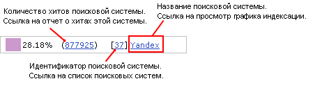

На данной странице (Веб-аналитика -> Поисковики -> Индексация -> Круговая диаграмма) отображается круговая диаграмма, иллюстрирующая долю каждой поисковой системы в общей индексации сайта.
| Параметр | Описание |
|---|---|
| Период | Временной интервал, за который необходимо представить диаграмму. |
| Поисковики | В этом списке можно выбрать поисковые системы, которые следует отобразить на диаграмме. |
| Показать все условия | Отражает все поля фильтра. |
| Скрыть все условия | Скрывает все поля фильтра, кроме полей по умолчанию. |
Чтобы построить диаграмму по заданным критериям поиска, нажмите на кнопку Найти.
| Кнопка | Описание |
|---|---|
| Список | Нажатие этой кнопки открывает форму со списком всех поисковых систем. |
| Графики | Открывает форму с графиком индексации сайта поисковыми системами. |
| Настроить | Позволяет перейти к диалогу настройки внешнего вида отчетной формы. |
Внизу диаграммы находится ее легенда, содержащая важную информацию. Легенда позволяет не только идентифицировать сегменты диаграммы, но и открывать формы с дополнительной информацией.

| © «Битрикс», 2001-2008, «1C-Битрикс», 2008 | 1С-Битрикс: Управление сайтом |